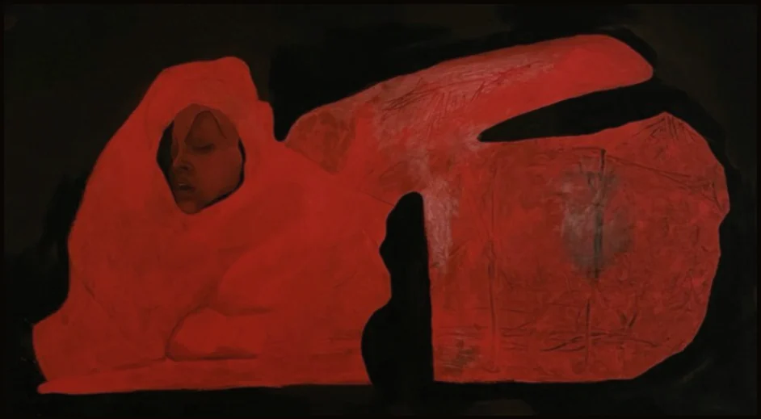

Живопис — Акрил
Rot
2023 · Акрил на полотні · 122 × 79 cm
Постать, що лежить, повністю огорнута червоним на темному тлі, обличчя спокійно повернуте вбік.
Надіслати запит Вероніка Горицька
Вероніка Горицька

2023 · Акрил на полотні · 122 × 79 cm
Постать, що лежить, повністю огорнута червоним на темному тлі, обличчя спокійно повернуте вбік.
Надіслати запит